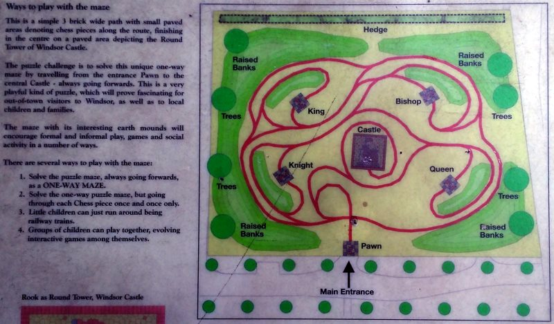

Posted on 7th September 2015
While spending a long weekend in Windsor, we found the following:

The instructions read, in part:
The puzzle challenge is to solve this unique one-way maze by travelling from the entrance Pawn to the central Castle -- always going forwards.
It's not quite clear to me what this means, but there is a good quote from Here:
The maze should be played as if you are a runaway train - always moving smoothly through the points forwards, and never able to reverse. This maze-movement idea was inspired by the nearby Windsor Railway Station, which brought the Royal Family to Windsor from Victorian times onwards. The maze paths sometimes run together in pairs, like a pair of railway tracks; sometimes they even run through "railway cuttings", where the grass surface rises and falls around them.
I wonder if there is an elegant way to convert this to a directed graph problem? I couldn't see how to do this cleanly, as in the problem you must pass through a "node", not reverse direction.
Anyway, here is a solution. From the pawn you initially get yourself into an outer "loop", from which only the King is accessible. As we can only visit the King once, we don't want to get back onto the outer loop in the same direction.
So, the only solution is King, Bishop, Knight, Queen, Castle. And once we've heading to the Knight, we only have a choice of which direction to pass through the Knight "station" in, everything else is determined. Before that we can loop about a bit if we wish.